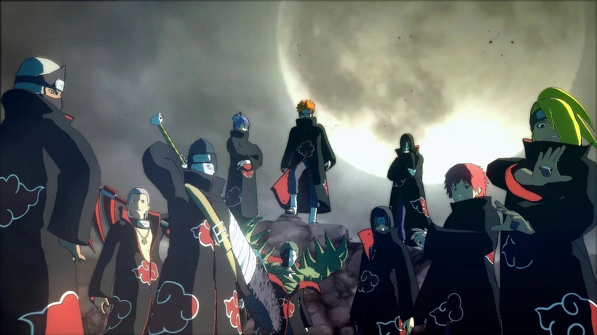

MIHAWK
MIHAWK- The best site to watch anime online for Free Do you know that according to Google, the monthly search volume for anime related topics is up to over 1 Billion times? Anime is famous worldwide and it is no wonder we've seen a sharp rise in the number of free anime streaming sites.
Just like free online movie streaming sites, anime watching sites are not created equally, some are better than the rest, so we've decided to build Zoro.to to be one of the best free anime streaming site for all anime fans on the world.
Zoro.to is a free site to watch anime and you can even download subbed or dubbed anime in ultra HD quality without any registration or payment. By having No Ads in all kinds, we are trying to make it the safest site for free anime.
Yes we are, we do have only one Ads to cover the server cost and we keep scanning the ads 24/7 to make sure all are clean, If you find any ads that is suspicious, please forward us the info and we will remove it.
Safety: We try our best to not having harmful ads on Kaneki.
Content library: Our main focus is anime. You can find here popular, classic, as well as current titles from all genres such as action, drama, kids, fantasy, horror, mystery, police, romance, school, comedy, music, game and many more. All these titles come with English subtitles or are dubbed in many languages.
Quality/Resolution: All titles are in excellent resolution, the best quality possible. Zoro.to also has a quality setting function to make sure our users can enjoy streaming no matter how fast your Internet speed is. You can stream the anime at 360p if your Internet is being ridiculous, Or if it is good, you can go with 720p or even 1080p anime.
Streaming experience: Compared to other anime streaming sites, the loading speed at Zoro.to is faster. Downloading is just as easy as streaming, you won't have any problem saving the videos to watch offline later.
Customer care: We are in active mode 24/7. You can always contact us for any help, query, or business-related inquiry. On our previous projects, we were known for our great customer service as we were quick to fix broken links or upload requested content.
"ANIME"
Anime (Japanese: ???, IPA: [a?ime] (listen)) is hand-drawn and computer-generated animation originating from Japan. Outside of Japan and in English, anime refers specifically to animation produced in Japan. However, in Japan and in Japanese, anime (a term derived from a shortening of the English word animation) describes all animated works, regardless of style or origin. Animation produced outside of Japan with similar style to Japanese animation is commonly referred to as anime-influenced animation. The earliest commercial Japanese animations date to 1917. A characteristic art style emerged in the 1960s with the works of cartoonist Osamu Tezuka and spread in following decades, developing a large domestic audience. Anime is distributed theatrically, through television broadcasts, directly to home media, and over the Internet. In addition to original works, anime are often adaptations of Japanese comics (manga), light novels, or video games. It is classified into numerous genres targeting various broad and niche audiences. Anime is a diverse medium with distinctive production methods that have adapted in response to emergent technologies. It combines graphic art, characterization, cinematography, and other forms of imaginative and individualistic techniques.[2] Compared to Western animation, anime production generally focuses less on movement, and more on the detail of settings and use of "camera effects", such as panning, zooming, and angle shots.Diverse art styles are used, and character proportions and features can be quite varied, with a common characteristic feature being large and emotive eyes. The anime industry consists of over 430 production companies, including major studios such as Studio Ghibli, Sunrise, Bones, Ufotable, MAPPA, Wit Studio, CoMix Wave Films and Toei Animation. Since the 1980s, the medium has also seen widespread international success with the rise of foreign dubbed, subtitled programming, and since the 2010s its increasing distribution through streaming services and a widening demographic embrace of anime culture, both within Japan and Worldwide. As of 2016, Japanese animation accounted for 60% of the world's animated television shows.
Seeking to be the greatest pirate in the world, young Monkey D. Luffy, endowed with stretching powers from the legendary gum-gum devil's fruit, travels toward the Grand Line in search of One Piece, the greatest treasure in the world. Along with comrades in arms Roronoa Zoro (the swordsman), Usopp (the sharp shooter), Nami (the navigator), Sanji (the cook), Chopper (the doctor), Nico Robin (an Archeologist), Franky (a shipwright), Brook (the musician/skeleton) and Jinbei (the helmsman) comic adventures mix with true heroism in the time of great naval battles.
Moments prior to Naruto Uzumaki's birth, a huge demon known as the Kyuubi, the Nine-Tailed Fox, attacked Konohagakure, the Hidden Leaf Village, and wreaked havoc. In order to put an end to the Kyuubi's rampage, the leader of the village, the Fourth Hokage, sacrificed his life and sealed the monstrous beast inside the newborn Naruto. Now, Naruto is a hyperactive and knuckle-headed ninja still living in Konohagakure. Shunned because of the Kyuubi inside him, Naruto struggles to find his place in the village, while his burning desire to become the Hokage of Konohagakure leads him not only to some great new friends, but also some deadly foes.
Tokyo has become a cruel and merciless city—a place where vicious creatures called "ghouls" exist alongside humans. The citizens of this once great metropolis live in constant fear of these bloodthirsty savages and their thirst for human flesh. However, the greatest threat these ghouls pose is their dangerous ability to masquerade as humans and blend in with society. Based on the best-selling supernatural horror manga by Sui Ishida, Tokyo Ghoul follows Ken Kaneki, a shy, bookish college student, who is instantly drawn to Rize Kamishiro, an avid reader like himself. However, Rize is not exactly who she seems, and this unfortunate meeting pushes Kaneki into the dark depths of the ghouls' inhuman world. In a twist of fate, Kaneki is saved by the enigmatic waitress Touka Kirishima, and thus begins his new, secret life as a half-ghoul/half-human who must find a way to integrate into both societies

Ever since the death of his father, the burden of supporting the family has fallen upon Tanjirou Kamado's shoulders. Though living impoverished on a remote mountain, the Kamado family are able to enjoy a relatively peaceful and happy life. One day, Tanjirou decides to go down to the local village to make a little money selling charcoal. On his way back, night falls, forcing Tanjirou to take shelter in the house of a strange man, who warns him of the existence of flesh-eating demons that lurk in the woods at night. When he finally arrives back home the next day, he is met with a horrifying sight—his whole family has been slaughtered. Worse still, the sole survivor is his sister Nezuko, who has been turned into a bloodthirsty demon. Consumed by rage and hatred, Tanjirou swears to avenge his family and stay by his only remaining sibling. Alongside the mysterious group calling themselves the Demon Slayer Corps, Tanjirou will do whatever it takes to slay the demons and protect the remnants of his beloved sister's humanity

A shinigami, as a god of death, can kill any person—provided they see their victim's face and write their victim's name in a notebook called a Death Note. One day, Ryuk, bored by the shinigami lifestyle and interested in seeing how a human would use a Death Note, drops one into the human realm. High school student and prodigy Light Yagami stumbles upon the Death Note and—since he deplores the state of the world—tests the deadly notebook by writing a criminal's name in it. When the criminal dies immediately following his experiment with the Death Note, Light is greatly surprised and quickly recognizes how devastating the power that has fallen into his hands could be. With this divine capability, Light decides to extinguish all criminals in order to build a new world where crime does not exist and people worship him as a god. Police, however, quickly discover that a serial killer is targeting criminals and, consequently, try to apprehend the culprit. To do this, the Japanese investigators count on the assistance of the best detective in the world: a young and eccentric man known only by the name of L.